UC Berkeley Pac-Man A.I. Project Part 1
Design
Part 1 of Python based project from UC Berkeley's CS188 Intro to A.I. course. http://ai.berkeley.edu/project_overview.html The focus is to use the game logic of Pac-Man as a means to learn fundamental artificial intelligence concepts, such as state-space search, probalisitic inference, and reinforcement learning. We use various multi-agent searches like A*, minimax, expectimax with alpha-beta pruning.
Architecture/Tools Used
Python 2.7
Auto grader created by project graders
No external Python package required out of standard Python 2.7 distribution
Overview/Abstract
Given a Pac-Man agent, through his maze world with various layouts, food types, and enemies solve the given search problem efficiently with properly implemented search algorithms. We are given a Pac-Man start state and need to reach the problem’s goal state using successor functions that maintain the successor state to the given state, action or direction to take, and path costs or heuristics if necessary to the search algorithm. We later develop our own Pac-Man search problem, with its own unique goal state as well as specific heuristics for the problem.
Implementation of classic Pac-Man game with ghosts using minimax and expectimax searches using an evaluation function design. The evaluation function helps to estimate the value of a position to be used in various algorithms like minmax. In Pac-Man’s case, we consider his position relatives to all the food on the board, but we also consider the position of enemy ghosts, which when properly implemented should lower the value produced by the evaluation function. We will compare minimax with minimax implemented with alpha beta pruning.
Problem Statements
Implement Depth First Search (prioritizes searching the deepest node in the search tree first), Breadth First Search (prioritizes searching the shallowest nodes in search tree first), Uniform Cost Search (prioritizes searching the least cost nodes first), A* Search (prioritizes search least cost nodes, along with heuristics) algorithms given different sized mazes and search problems. Implement the corner search problem for which Pac-Man has to find the shortest path too all the corners by using your own corner heuristics. Specifically, implement a corner successor function and state space functions taking into account wall hits. Implement a consistent, and admissible food heuristics for the Food Search Problem, which is to find a path that eats all the food on the grid.
Code Snippets
Graph Search
Given various mazes with different search problems and goal states, solve the problems using different search algorithms. Search algorithms should vary only by data structure used to maintain the fringe and explore the search tree as well as any costs or heuristic functions used in the implementation. I used a graphSearch function, with a structure similar to the given solution, as a foundation to implement all of the different search algorithms. I started by defining the key constraints of A.I and search algorithms, which are start state, goal state, successor functions, and state space tree. I started by reading through the given implementation of the searchAgents.py file. I found the built in functions isStartState(), isGoalState(), and getSuccessor() extremely useful. Then I decided how to implement the state space tree, and decided to use a fringe (also known as frontier) as a triple containing the state, list of paths/directions, and possible costs because I tried to emulate the tuple returned by getSuccessor(). While pushing new nodes to the fringe, I modified the state to be the state given by the successor, appended to the list of paths, and accumulated path costs.
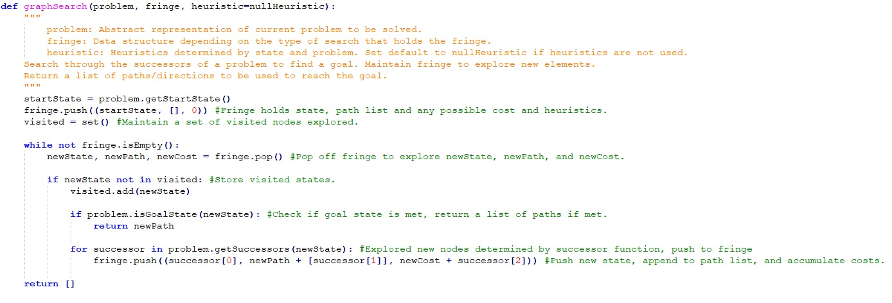Depth First Search, Breadth First Search, Uniform Cost Search, A* Search
Creating the specific search algorithms, such as DFS, BFS, UCS, and A* was pretty self-explanatory after creating the graphSeach function. The only difficulty was with UCS and A* where the cost and cost + heuristics respectively had to be taken into consideration. By using a graphSearch function to be used by every search algorithm, it allowed for more clarity, reusability and functionality. The difference between every algorithm varies only by the data structure, and any costs or heuristics. Depth First searches adjacent nodes first until reaching the bottom of a branch before it starts backtracking again. Depth First Search uses a LIFO structure, hence the use of a Stack to pop from the fringe of exploration elements.We store the fringe in a Stack data structure and return graphSearch(problem, util.Stack) for Depth First Search result.
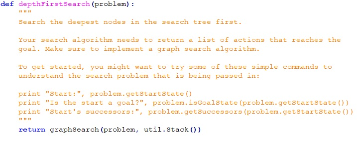Breadth First Search is an algorithm that prioritizes searching for neighbor nodes first before moving to next level neighbors. We use a Queue structure to maintain fringe exploration.
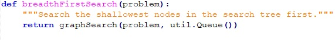Uniform Cost Search is an algorithm that searches based on the most optimal cost. The minimum cumulative cost has priority; thus, we use a priority queue. I use a lambda function that is called every time a new successor is pushed to the fringe, which takes the third element of the successor i.e. cost. This is inputed into the PriorityQueueWithFunction, which will return the lowest cost path.
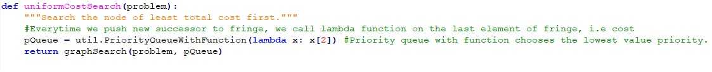A* search is an algorithm that is a combination of heuristics from greedy search and cost from uniform cost search. Like UCS it uses a Priority Queue to maintain the fringe.
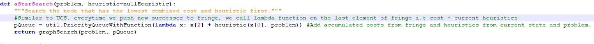For the corner search problem, we needed to implement the startState, goalState, and getSuccessor functions. I decided to set the startState the given startingPosition in the __init__ function as well as the tuples of the corners to keep reference to the corners unvisited. In my approach we start with all the corners, and when there is no more corners in the tuple we have reached the goalState, i.e len(state[1]) == 0.
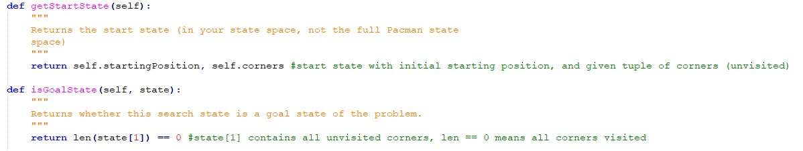To implement the getSuccessor function for the CornerProblem, I followed the given initial code snippet and built on its logic. We are given the starting position of Pac-Man, given action, and a corner tuple. I create the newState by checking if the new position of Pac-Man is at a corner location, and append it to the cornerTup if not. nextState is a tuple consisting of a tuple representing a position, and a cornerTup maintaining the status of unvisited corners. If the Pac-Man does not hit wall, append to successors with the nextState, action, and stepcost(incremental).
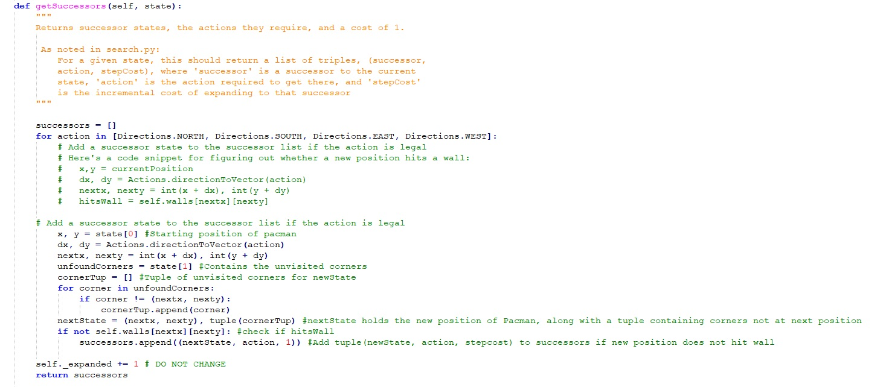To implement corner heuristics, I iterate through unvisited corners tuple as a list. I find the distance to all the corners and append to a list a tuple containing the distance to a corner along with the corner itself. After storing all of the corners into a list, I find the corner with the closest distance to Pac-Man. I remove that corner from the unvisistedCorners list, add the distance to the heuristic, and set the current position of Pac-Man to now be at that corner. The idea is to for Pac-Man to reach the closest corner first, add that distance to the heuristic value, and set Pac-Man’s position to now be at that corner, while removing that corner from the unvisitedCorners list. We do this until we have reached all the corners.

For the FoodSearch problem, we implement foodHeuristic. We start with the given foodGrid and starting Pac-Man position. I then look through all the food in the given foodList and find the mazeDistance to the respective food. I take the largest distance found between Pac-Man’s position and food as the heuristic value to return. This is because I tried to keep it consistent with the notion that when the goal state is met, heuristic value should be 0. This means that the farther away from the goalstate the larger the heuristic should be, hence why I used the largest mazeDistance found. My implementation takes quite a bit of time to produce an answer; I assume it’s because I iterate through every food on the foodGrid.
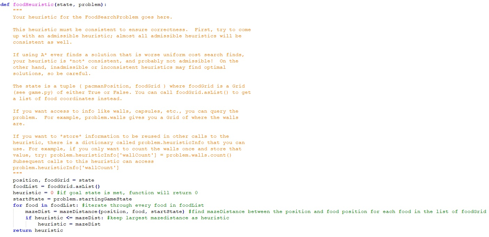Solution Result Against Auto grader
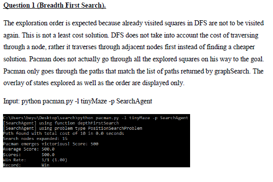
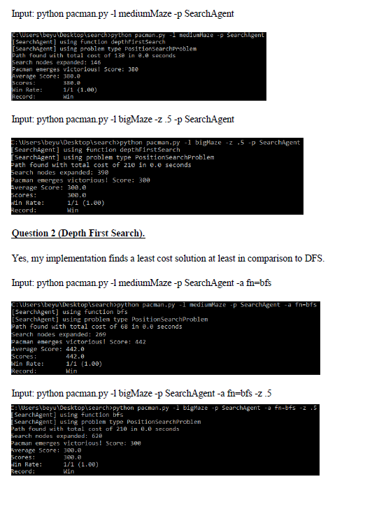
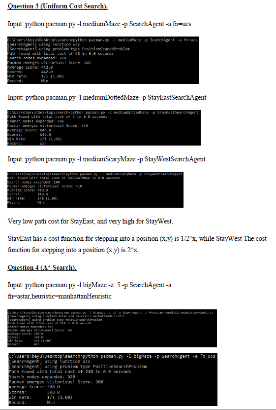
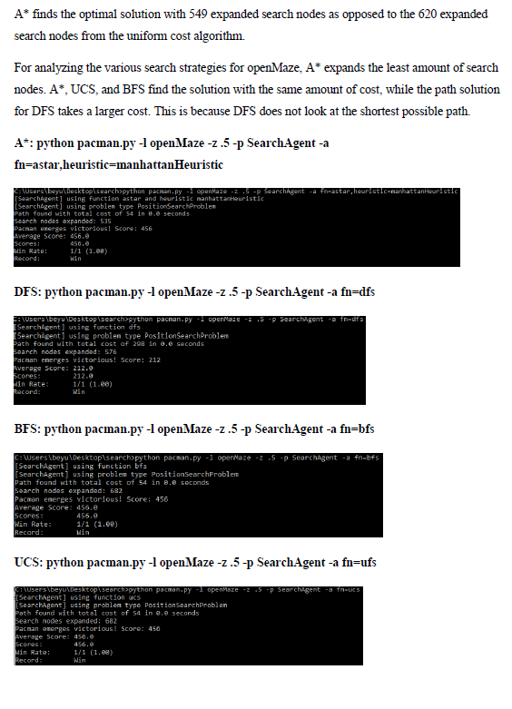
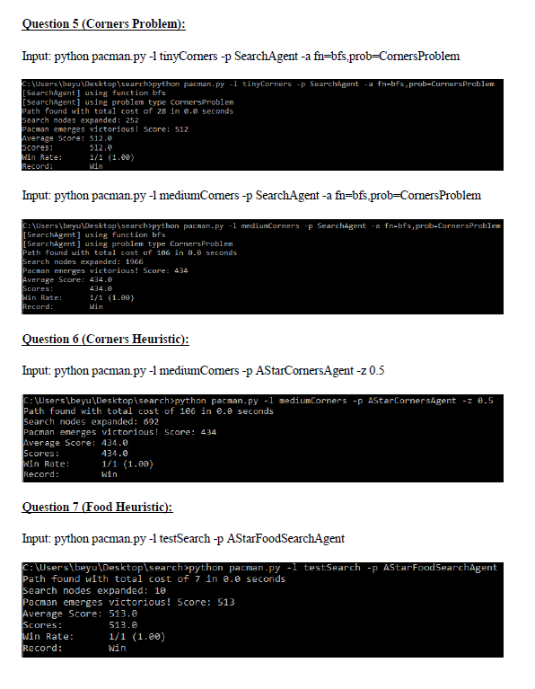
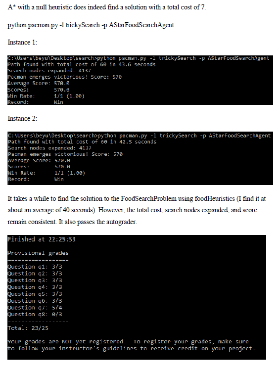
Conclusion
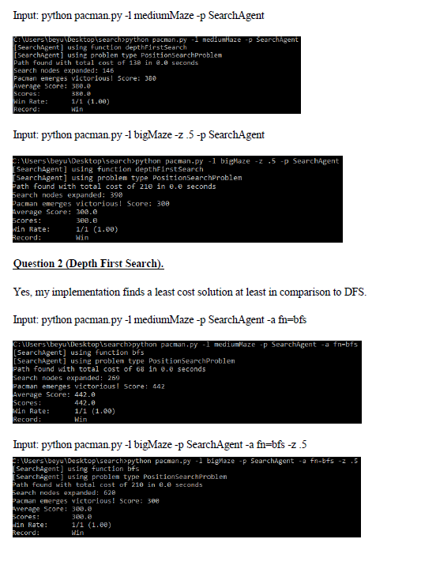
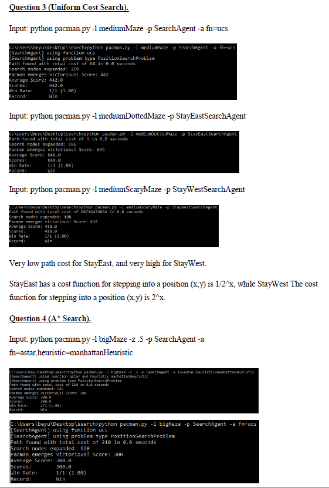
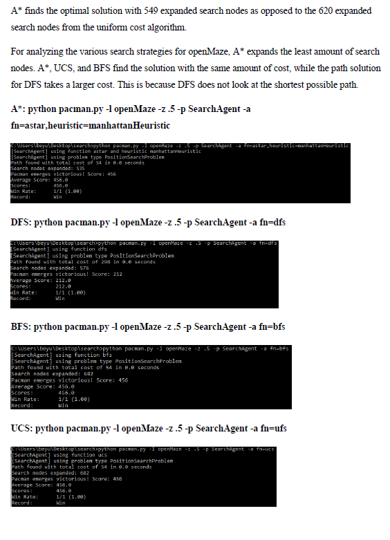
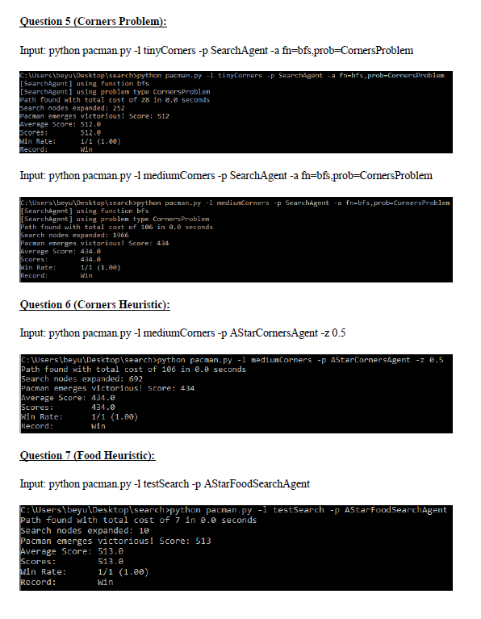
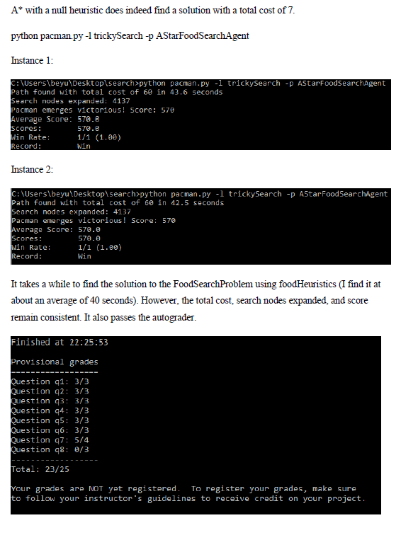
Conclusion
The search algorithms differ only in the data structure used to store the fringe, and maintain search nodes, as well as any cost or heuristic factors. Using different search algorithms proved different search nodes expanded, paths, as well as costs. Each algorithm provided different scores, showing the different results obtained. Using heuristics depicted a more efficient result, with less cost and less search nodes expanded in all of the search problems and test layouts given. Admissible heuristics is used to further ensure the cost of the goal is never overestimated. Maintaining knowledge of start state, goal state, successor functions, and state space is important to understand. It was a bit confusing understanding the entire Pac-Man game abstract representation initially, but as I began implementing it became clearer how each intrinsic function is used and how to build upon that. From this project I was able to explore the pros and cons of each search algorithm in terms of cost, and search nodes expanded, as well as possible edge case scenarios where they proved to not be efficient.